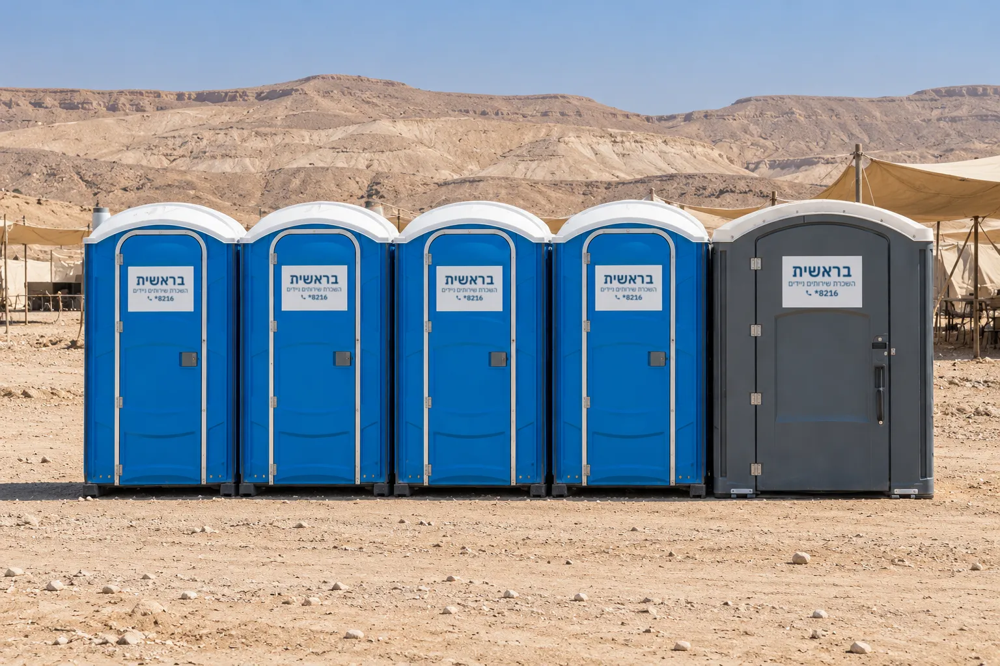

השכרת שירותים ניידים בדרום
מאתרי בנייה בבאר שבע, דרך מפעלים מרוחקים בנגב, ועד לוקיישנים לאירועים במדבר ובערבה. תאי שירותים שמתאימים למזג אוויר קיצוני ולדרכי גישה מורכבות.
בנייה, תעשייה ואירועים בשטח
בדרום הארץ יש לעיתים תנאי שטח ייחודיים: מזג אוויר קיצוני ואזורים מרוחקים עם דרכי גישה מורכבות. התאים עשויים פלסטיק קשיח (פוליאתילן בצפיפות גבוהה), עמיד בפני קרינת שמש חזקה, טמפרטורות קיצוניות וחומרי חיטוי חזקים.
השירותים פועלים כמערכת עצמאית, בלי חיבור לצנרת מים או לביוב: מיכל אגירה אטום עם תמיסה כימית ייעודית, ופתחי אוורור בחלק העליון של התא.


כלל אצבע לכמות התאים
עד 200 משתתפים: מומלץ להציב 2-3 תאי שירותים. באירוע של כ-500 אורחים: 5 תאים לפחות, וממשיכים ביחס דומה ככל שכמות האנשים גדלה. בקירוב, 1-2 תאים לכל 100 איש.
תאים סטנדרטיים
יחידות עצמאיות, מתאימות מאוד לאתרי בנייה ולאירועי שטח פשוטים.
קרונות מפוארים
כמה תאים ביחידה אחת, לאירועים חגיגיים כמו חתונה במדבר.
תאים נגישים
דלת מרווחת לכניסה עם כיסא גלגלים, חלל פנימי גדול ומעקה לשימוש עצמאי ובטוח.
תחזוקה שוטפת בכל לוקיישן בדרום
איש צוות ייעודי אחראי על ניקיון שוטף ובדיקת תקינות התאים בזמן אמת. מיכל האגירה נשאב באופן הרמטי באמצעות משאית שירות ייעודית ("ביובית"), שירות חיוני במיוחד באירועים ארוכים ובאתרי בנייה פעילים.
אפשר לשלב פתרונות משלימים כמו מפיצי ריח אוטומטיים ומוזיקת רקע.
שאלות נפוצות על שירותים ניידים בדרום
כיצד פועלים שירותים כימיים ללא חיבור לתשתיות ביוב?
השירותים פועלים כמערכת עצמאית עם מיכל אגירה אטום ותמיסה כימית ייעודית. התמיסה מפרקת את הפסולת האורגנית, מחטאת את המיכל ומנטרלת ריחות, ופתחי אוורור עליונים מאפשרים סירקולציה טבעית של אוויר.
מהם הפרמטרים המרכזיים לבחירה של כמות וסוג התאים?
כמות המשתתפים, ביחס של 1-2 תאים לכל 100 איש; אופי הפעילות, תאים סטנדרטיים לאתרי בנייה מול קרונות מפוארים לאירועים חגיגיים; והצורך בנגישות לאנשים עם מוגבלויות או לאוכלוסייה מבוגרת.
מה כולל שירות התחזוקה השוטף?
ניקיון על ידי איש צוות ייעודי, בדיקת תקינות בזמן אמת ושאיבת מיכל האגירה באופן הרמטי באמצעות ביובית.
האם השירותים הניידים עמידים בתנאי מזג האוויר של דרום הארץ?
כן. התאים עשויים פלסטיק קשיח (פוליאתילן בצפיפות גבוהה), עמיד בפני קרינת שמש חזקה, טמפרטורות קיצוניות ופגעי מזג אוויר האופייניים לדרום ולמדבר.
מתכננים אירוע במדבר או פרויקט בדרום? חייגו 8216*. נשמח לייעץ ולבנות הצעת מחיר.